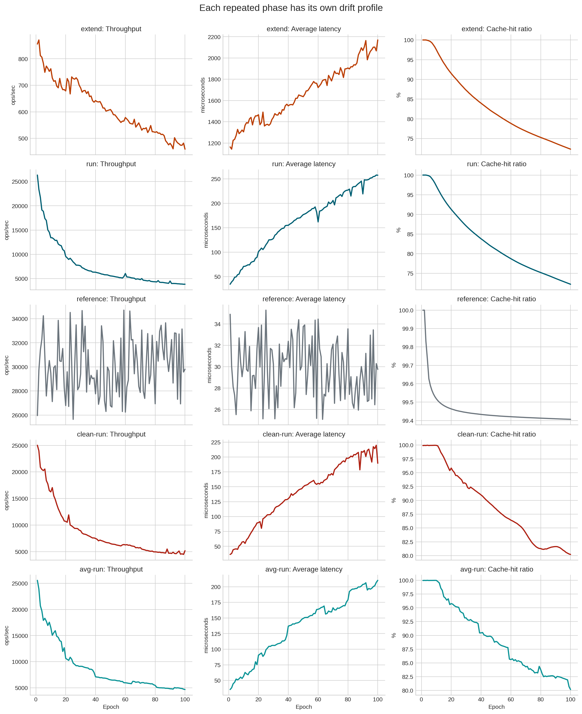
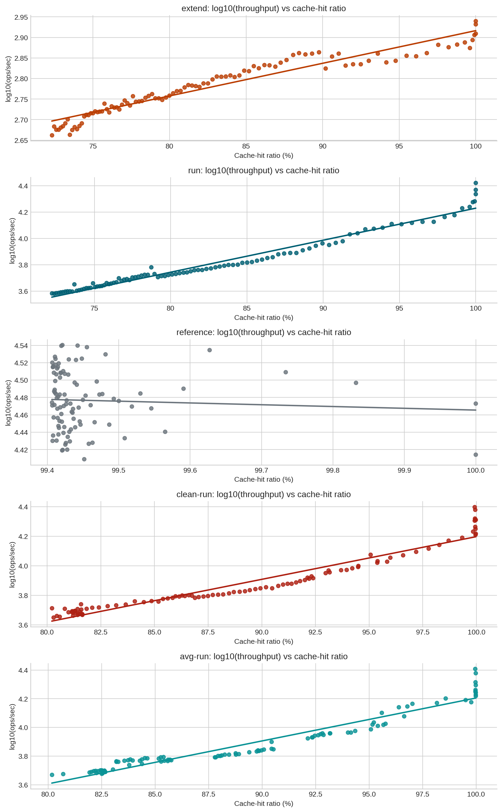
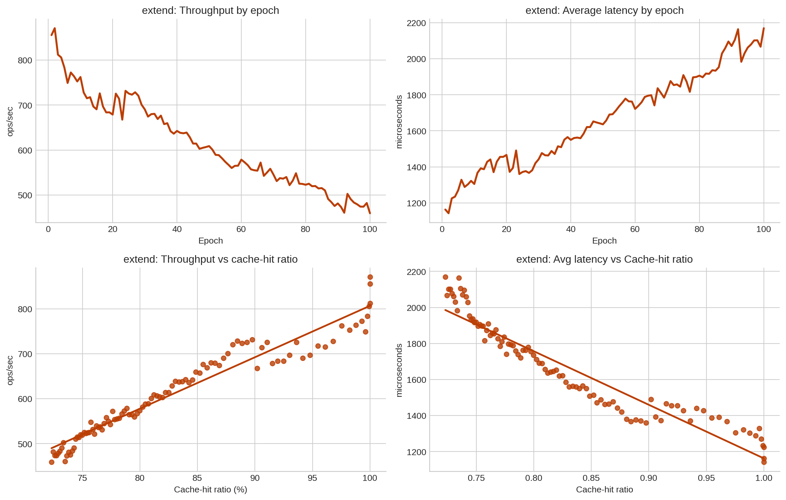
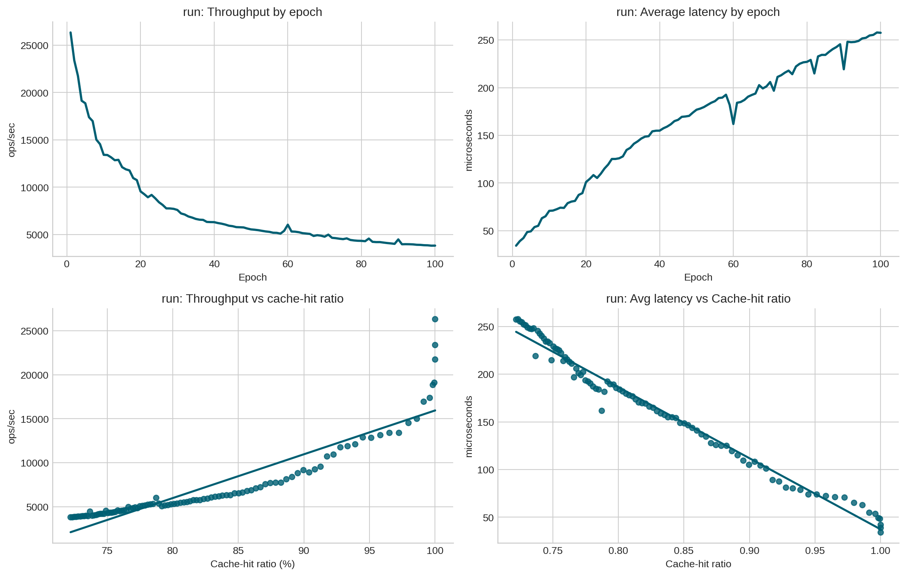
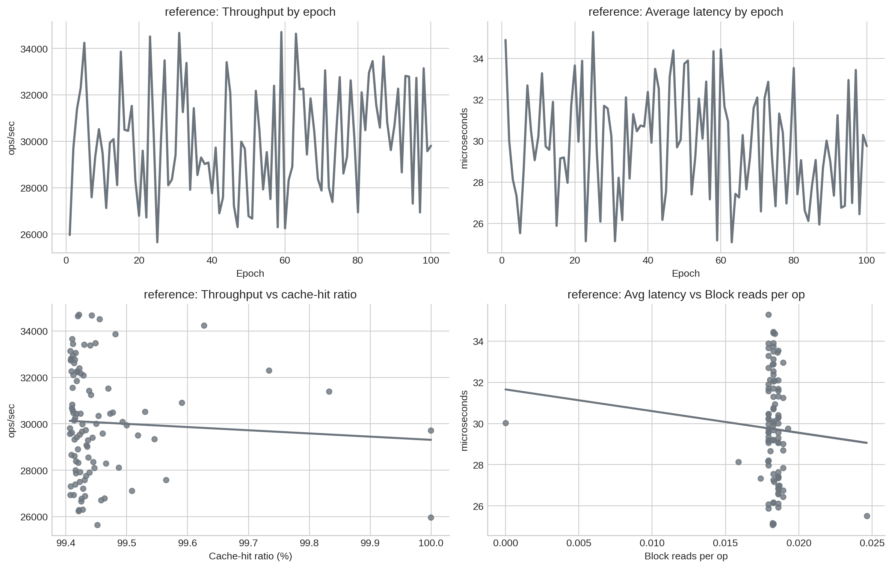
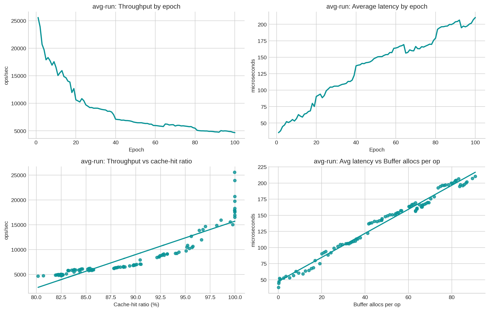

| dataset | rows | epochs | phases_present | analyzed_phases | operations_present | |
|---|---|---|---|---|---|---|
| 0 | postgresql_run1_uniform_heavy_vacuum.csv | 501 | 101 | avg-run, clean-run, extend, load, reference, run | extend, run, reference, clean-run, avg-run | EXTEND, INSERT, READ |
Phase-by-Phase Correlation Analysis: postgresql_run1_uniform_heavy_vacuum.csv
1 Overview
This report updates the earlier analysis by treating each repeated benchmark phase as its own unit of analysis:
extendrunreferenceclean-runavg-run
The single-row load phase is excluded from correlation work because it does not have enough temporal depth for EDA or per-epoch change analysis.
The PostgreSQL counters in this dataset are cumulative, so the report uses two complementary views:
- monotonic correlations on raw per-phase series, which capture long-run drift
- first-difference correlations on per-epoch changes, which reduce the risk of mistaking “everything grows over time” for a direct relationship
2 Load And Prepare The Data
3 Phase Inventory
| Phase | Operation | rows | |
|---|---|---|---|
| 0 | avg-run | READ | 100 |
| 1 | clean-run | READ | 100 |
| 2 | extend | EXTEND | 100 |
| 3 | load | INSERT | 1 |
| 4 | reference | READ | 100 |
| 5 | run | READ | 100 |
All repeated phases except load contain 100 epochs, which makes them suitable for separate EDA and within-phase correlation analysis.
4 Cross-Phase Summary
| Operation | Epochs | Throughput change % | Avg latency change % | P95 latency change % | Cache hit change pts | Top monotonic driver | Top monotonic rho | Top first-diff driver | Top first-diff r | |
|---|---|---|---|---|---|---|---|---|---|---|
| Phase | ||||||||||
| extend | EXTEND | 100 | -46.3 | +86.5 | +56.3 | -27.690 | Cache-hit ratio | -0.986 | WAL bytes per op | +0.398 |
| run | READ | 100 | -85.5 | +650.8 | +526.1 | -27.792 | Cache-hit ratio | -0.996 | Delta checkpoint write time | -0.205 |
| reference | READ | 100 | +14.8 | -14.7 | -9.5 | -0.593 | Block reads per op | -0.180 | Block reads per op | -0.102 |
| clean-run | READ | 100 | -79.3 | +420.4 | +366.7 | -19.696 | Buffer allocs per op | +0.989 | Buffer allocs per op | -0.165 |
| avg-run | READ | 100 | -81.7 | +493.3 | +417.8 | -19.789 | Buffer allocs per op | +0.991 | Buffer allocs per op | +0.242 |
run,clean-run, andavg-runall show strong long-run degradation: throughput falls by 85.5%, 79.3%, and 81.7% respectively, while average latency grows sharply.extendalso degrades, but less severely on throughput than the read-oriented run-family phases. Its strongest short-run signal isWAL bytes per opwithr=+0.398, which keeps the WAL story visible even after detrending.referenceis the structural outlier: throughput improves by 14.8%, average latency improves by 14.7%, and cache-hit ratio changes by only -0.593 points.
5 Cross-Phase EDA Overview

The overview already shows that reference does not behave like the other repeated phases. Its performance stays comparatively flat or slightly improves, while run, clean-run, avg-run, and extend all drift toward lower throughput and higher latency.
6 Log Throughput Vs Cache-Hit Ratio

The log transform makes the phase shapes easier to compare on one visual scale:
run,clean-run, andavg-runstill show strong downward structure as cache-hit ratio falls.extendremains clearly negative too, but its relationship looks smoother once the raw throughput scale is compressed.referencestays comparatively flat, which reinforces the earlier conclusion that it behaves differently from the degrading phases.
7 Phase Details
7.1 extend
| Phase | Operation | Epochs | Throughput change % | Avg latency change % | P95 latency change % | Cache hit change pts | Top monotonic driver | Top monotonic rho | Top first-diff driver | Top first-diff r | |
|---|---|---|---|---|---|---|---|---|---|---|---|
| 0 | extend | EXTEND | 100 | -46.3 | +86.5 | +56.3 | -27.690 | Cache-hit ratio | -0.986 | WAL bytes per op | +0.398 |

Top monotonic correlations
| Target | Metric | Spearman rho | |
|---|---|---|---|
| 0 | Throughput | Cache-hit ratio | +0.986 |
| 1 | Throughput | WAL bytes per op | -0.986 |
| 2 | Throughput | Buffer allocs per op | -0.986 |
| 3 | Throughput | Block reads per op | -0.986 |
| 4 | Average latency | Cache-hit ratio | -0.986 |
| 5 | Average latency | WAL bytes per op | +0.986 |
| 6 | Average latency | Buffer allocs per op | +0.986 |
| 7 | Average latency | Block reads per op | +0.986 |
| 8 | P95 latency | Block reads per op | +0.854 |
| 9 | P95 latency | Buffer allocs per op | +0.853 |
| 10 | P95 latency | WAL bytes per op | +0.853 |
| 11 | P95 latency | Cache-hit ratio | -0.852 |
Top first-difference correlations
| Target | Metric | First-diff r | |
|---|---|---|---|
| 0 | Throughput | WAL bytes per op | -0.284 |
| 1 | Throughput | Block hits per op | -0.272 |
| 2 | Throughput | Delta checkpoint write time | -0.252 |
| 3 | Throughput | WAL records per op | -0.157 |
| 4 | Average latency | WAL bytes per op | +0.398 |
| 5 | Average latency | Delta checkpoint sync time | +0.235 |
| 6 | Average latency | WAL records per op | +0.221 |
| 7 | Average latency | Delta checkpoint write time | +0.209 |
| 8 | P95 latency | Delta checkpoint write time | +0.156 |
| 9 | P95 latency | WAL bytes per op | +0.132 |
| 10 | P95 latency | Cache-hit ratio | +0.098 |
| 11 | P95 latency | Delta checkpoint sync time | -0.090 |
- The strongest long-run driver for average latency in this phase is
Cache-hit ratio(rho=-0.986). - This phase degrades materially: throughput changes by -46.3% and average latency changes by 86.5%, alongside a cache-hit shift of -27.690 points.
- After detrending, the clearest same-step signal for average latency is
WAL bytes per op(r=+0.398), so this metric still moves with short-run latency swings.
7.2 run
| Phase | Operation | Epochs | Throughput change % | Avg latency change % | P95 latency change % | Cache hit change pts | Top monotonic driver | Top monotonic rho | Top first-diff driver | Top first-diff r | |
|---|---|---|---|---|---|---|---|---|---|---|---|
| 0 | run | READ | 100 | -85.5 | +650.8 | +526.1 | -27.792 | Cache-hit ratio | -0.996 | Delta checkpoint write time | -0.205 |

Top monotonic correlations
| Target | Metric | Spearman rho | |
|---|---|---|---|
| 0 | Throughput | Cache-hit ratio | +0.996 |
| 1 | Throughput | Buffer allocs per op | -0.996 |
| 2 | Throughput | WAL records per op | -0.995 |
| 3 | Throughput | WAL bytes per op | -0.995 |
| 4 | Average latency | Cache-hit ratio | -0.996 |
| 5 | Average latency | Buffer allocs per op | +0.995 |
| 6 | Average latency | WAL records per op | +0.995 |
| 7 | Average latency | WAL bytes per op | +0.995 |
| 8 | P95 latency | Cache-hit ratio | -0.991 |
| 9 | P95 latency | Buffer allocs per op | +0.991 |
| 10 | P95 latency | WAL records per op | +0.990 |
| 11 | P95 latency | WAL bytes per op | +0.990 |
Top first-difference correlations
| Target | Metric | First-diff r | |
|---|---|---|---|
| 0 | Throughput | Block hits per op | -0.600 |
| 1 | Throughput | WAL records per op | -0.195 |
| 2 | Throughput | Cache-hit ratio | +0.182 |
| 3 | Throughput | WAL bytes per op | +0.090 |
| 4 | Average latency | Delta checkpoint write time | -0.205 |
| 5 | Average latency | Buffer allocs per op | -0.179 |
| 6 | Average latency | WAL bytes per op | -0.108 |
| 7 | Average latency | Cache-hit ratio | -0.064 |
| 8 | P95 latency | Buffer allocs per op | -0.150 |
| 9 | P95 latency | Delta checkpoint write time | -0.106 |
| 10 | P95 latency | Block reads per op | -0.094 |
| 11 | P95 latency | Cache-hit ratio | -0.087 |
- The strongest long-run driver for average latency in this phase is
Cache-hit ratio(rho=-0.996). - This phase degrades materially: throughput changes by -85.5% and average latency changes by 650.8%, alongside a cache-hit shift of -27.792 points.
- After detrending, no derived metric has a strong same-step tie to average latency (best
r=-0.205forDelta checkpoint write time), which suggests the main story here is gradual drift rather than sharp local shocks.
7.3 reference
| Phase | Operation | Epochs | Throughput change % | Avg latency change % | P95 latency change % | Cache hit change pts | Top monotonic driver | Top monotonic rho | Top first-diff driver | Top first-diff r | |
|---|---|---|---|---|---|---|---|---|---|---|---|
| 0 | reference | READ | 100 | +14.8 | -14.7 | -9.5 | -0.593 | Block reads per op | -0.180 | Block reads per op | -0.102 |

Top monotonic correlations
| Target | Metric | Spearman rho | |
|---|---|---|---|
| 0 | Throughput | Block reads per op | +0.180 |
| 1 | Throughput | Block hits per op | +0.141 |
| 2 | Throughput | Cache-hit ratio | -0.137 |
| 3 | Throughput | WAL bytes per op | +0.116 |
| 4 | Average latency | Block reads per op | -0.180 |
| 5 | Average latency | Block hits per op | -0.138 |
| 6 | Average latency | Cache-hit ratio | +0.135 |
| 7 | Average latency | WAL bytes per op | -0.114 |
| 8 | P95 latency | Block reads per op | -0.131 |
| 9 | P95 latency | Block hits per op | -0.103 |
| 10 | P95 latency | Cache-hit ratio | +0.088 |
| 11 | P95 latency | WAL bytes per op | -0.067 |
Top first-difference correlations
| Target | Metric | First-diff r | |
|---|---|---|---|
| 0 | Throughput | Block reads per op | +0.110 |
| 1 | Throughput | Block hits per op | -0.093 |
| 2 | Throughput | Buffer allocs per op | -0.065 |
| 3 | Throughput | Cache-hit ratio | -0.056 |
| 4 | Average latency | Block reads per op | -0.102 |
| 5 | Average latency | Block hits per op | +0.083 |
| 6 | Average latency | Buffer allocs per op | +0.063 |
| 7 | Average latency | Cache-hit ratio | +0.051 |
| 8 | P95 latency | Block hits per op | +0.102 |
| 9 | P95 latency | Block reads per op | -0.098 |
| 10 | P95 latency | Delta checkpoint sync time | +0.067 |
| 11 | P95 latency | Cache-hit ratio | +0.045 |
- The strongest long-run driver for average latency in this phase is
Block reads per op(rho=-0.180). - This phase is the outlier: throughput improves by 14.8% while average latency improves by 14.7%, and cache-hit ratio is almost flat (-0.593 points).
- After detrending, no derived metric has a strong same-step tie to average latency (best
r=-0.102forBlock reads per op), which suggests the main story here is gradual drift rather than sharp local shocks.
7.4 clean-run
| Phase | Operation | Epochs | Throughput change % | Avg latency change % | P95 latency change % | Cache hit change pts | Top monotonic driver | Top monotonic rho | Top first-diff driver | Top first-diff r | |
|---|---|---|---|---|---|---|---|---|---|---|---|
| 0 | clean-run | READ | 100 | -79.3 | +420.4 | +366.7 | -19.696 | Buffer allocs per op | +0.989 | Buffer allocs per op | -0.165 |

Top monotonic correlations
| Target | Metric | Spearman rho | |
|---|---|---|---|
| 0 | Throughput | Buffer allocs per op | -0.989 |
| 1 | Throughput | WAL bytes per op | -0.989 |
| 2 | Throughput | WAL records per op | -0.989 |
| 3 | Throughput | Cache-hit ratio | +0.983 |
| 4 | Average latency | Buffer allocs per op | +0.989 |
| 5 | Average latency | WAL bytes per op | +0.988 |
| 6 | Average latency | WAL records per op | +0.988 |
| 7 | Average latency | Cache-hit ratio | -0.982 |
| 8 | P95 latency | Buffer allocs per op | +0.981 |
| 9 | P95 latency | WAL bytes per op | +0.980 |
| 10 | P95 latency | WAL records per op | +0.980 |
| 11 | P95 latency | Cache-hit ratio | -0.975 |
Top first-difference correlations
| Target | Metric | First-diff r | |
|---|---|---|---|
| 0 | Throughput | Cache-hit ratio | +0.154 |
| 1 | Throughput | Block reads per op | -0.133 |
| 2 | Throughput | Delta checkpoint sync time | +0.084 |
| 3 | Throughput | WAL records per op | -0.082 |
| 4 | Average latency | Buffer allocs per op | -0.165 |
| 5 | Average latency | Cache-hit ratio | -0.164 |
| 6 | Average latency | Delta checkpoint sync time | -0.161 |
| 7 | Average latency | WAL records per op | -0.130 |
| 8 | P95 latency | Cache-hit ratio | -0.263 |
| 9 | P95 latency | WAL records per op | -0.221 |
| 10 | P95 latency | Delta checkpoint sync time | -0.202 |
| 11 | P95 latency | Buffer allocs per op | -0.178 |
- The strongest long-run driver for average latency in this phase is
Buffer allocs per op(rho=+0.989). - This phase degrades materially: throughput changes by -79.3% and average latency changes by 420.4%, alongside a cache-hit shift of -19.696 points.
- After detrending, no derived metric has a strong same-step tie to average latency (best
r=-0.165forBuffer allocs per op), which suggests the main story here is gradual drift rather than sharp local shocks.
7.5 avg-run
| Phase | Operation | Epochs | Throughput change % | Avg latency change % | P95 latency change % | Cache hit change pts | Top monotonic driver | Top monotonic rho | Top first-diff driver | Top first-diff r | |
|---|---|---|---|---|---|---|---|---|---|---|---|
| 0 | avg-run | READ | 100 | -81.7 | +493.3 | +417.8 | -19.789 | Buffer allocs per op | +0.991 | Buffer allocs per op | +0.242 |

Top monotonic correlations
| Target | Metric | Spearman rho | |
|---|---|---|---|
| 0 | Throughput | Buffer allocs per op | -0.992 |
| 1 | Throughput | WAL records per op | -0.992 |
| 2 | Throughput | WAL bytes per op | -0.992 |
| 3 | Throughput | Cache-hit ratio | +0.988 |
| 4 | Average latency | Buffer allocs per op | +0.991 |
| 5 | Average latency | WAL bytes per op | +0.991 |
| 6 | Average latency | WAL records per op | +0.991 |
| 7 | Average latency | Cache-hit ratio | -0.987 |
| 8 | P95 latency | WAL bytes per op | +0.977 |
| 9 | P95 latency | Buffer allocs per op | +0.977 |
| 10 | P95 latency | WAL records per op | +0.977 |
| 11 | P95 latency | Cache-hit ratio | -0.972 |
Top first-difference correlations
| Target | Metric | First-diff r | |
|---|---|---|---|
| 0 | Throughput | Block hits per op | +0.261 |
| 1 | Throughput | Block reads per op | +0.114 |
| 2 | Throughput | Cache-hit ratio | -0.106 |
| 3 | Throughput | WAL records per op | -0.098 |
| 4 | Average latency | Buffer allocs per op | +0.242 |
| 5 | Average latency | WAL records per op | +0.206 |
| 6 | Average latency | Delta checkpoint sync time | +0.125 |
| 7 | Average latency | Block hits per op | -0.111 |
| 8 | P95 latency | Buffer allocs per op | +0.179 |
| 9 | P95 latency | WAL records per op | +0.136 |
| 10 | P95 latency | Block reads per op | -0.092 |
| 11 | P95 latency | WAL bytes per op | +0.085 |
- The strongest long-run driver for average latency in this phase is
Buffer allocs per op(rho=+0.991). - This phase degrades materially: throughput changes by -81.7% and average latency changes by 493.3%, alongside a cache-hit shift of -19.789 points.
- After detrending, no derived metric has a strong same-step tie to average latency (best
r=+0.242forBuffer allocs per op), which suggests the main story here is gradual drift rather than sharp local shocks.
8 Regression Comparison Across Phases
| Throughput ~ Cache-hit ratio slope | Throughput ~ Cache-hit ratio R^2 | Average latency ~ Cache-hit ratio slope | Average latency ~ Cache-hit ratio R^2 | Average latency ~ WAL bytes per op slope | Average latency ~ WAL bytes per op R^2 | Average latency ~ Buffer allocs per op slope | Average latency ~ Buffer allocs per op R^2 | |
|---|---|---|---|---|---|---|---|---|
| Phase | ||||||||
| extend | 1143.192357 | 0.938 | -2973.076769 | 0.899 | 0.014611 | 0.972 | 9.670531 | 0.950 |
| run | 49813.733621 | 0.823 | -745.104937 | 0.982 | 0.003472 | 0.966 | 2.351471 | 0.985 |
| reference | -137643.629194 | 0.003 | 172.972776 | 0.004 | -0.000015 | 0.010 | -0.008717 | 0.008 |
| clean-run | 64024.993635 | 0.775 | -798.182973 | 0.984 | 0.002874 | 0.957 | 1.947164 | 0.978 |
| avg-run | 67214.802150 | 0.799 | -802.958132 | 0.972 | 0.002751 | 0.963 | 1.863784 | 0.985 |
This comparison reinforces the phase split:
run,clean-run,avg-run, andextendall have strong long-run fits between latency and storage-pressure proxies.referencehas near-zeroR^2for the same relationships, which is another sign that it should not be folded into the same narrative as the other run-family phases.
9 Final Takeaway
The most useful update from the phase-by-phase view is that there are really two stories in this file:
run,clean-run,avg-run, andextendall show substantial drift toward worse performance, with cache efficiency falling and per-operation storage work rising.referencedoes not follow that pattern; it is comparatively stable and even improves slightly, so it acts more like a control phase than another copy ofrun.
That separation makes the most interesting correlation more precise:
The dataset does not contain one generic “run-phase slowdown”. It contains a cluster of degrading phases where cache loss and growing I/O pressure track worse performance, plus a distinct
referencephase where those relationships are weak and the system stays stable.